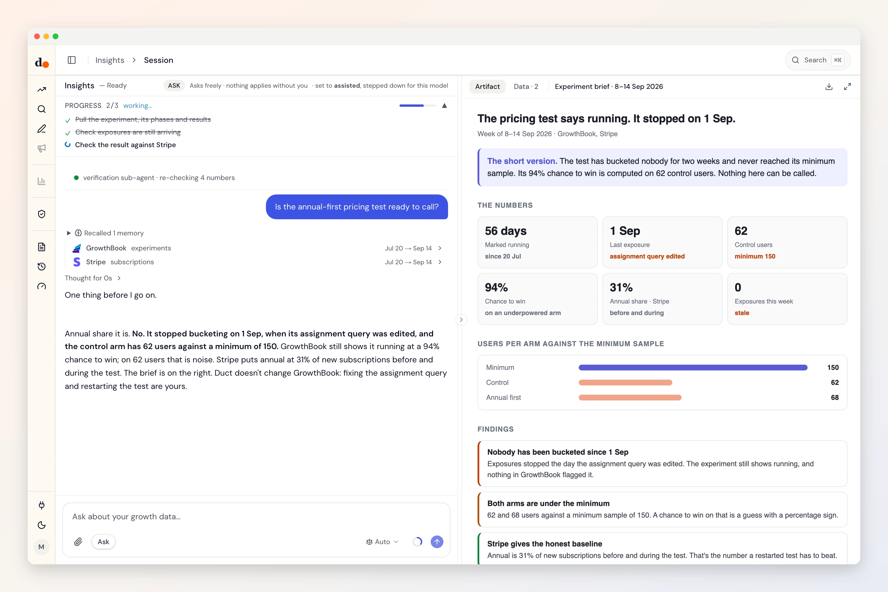

GrowthBook, before you call the test.
A test can say running for weeks after it stopped bucketing anyone. Duct reads your experiments and results, checks exposures are still arriving and the sample is big enough, and reads the outcome in Stripe.
- API key
- Reads one datasets
- Read-only
- Fields audited Aug 31, 2026

Ask
Questions you can just ask
Is this experiment ready to call?
 GrowthBook
GrowthBookWhich running tests have stopped bucketing?
GrowthBookDid the winning variant change revenue?
 GrowthBook + Stripe
GrowthBook + StripeDoes the test's metric match the event we track?
 GrowthBook + Mixpanel
GrowthBook + Mixpanel
Access
What it reads. What it can change.
What it reads
- Growthbook experimentsexperimentsresultsstatusstale runningrunningfeature count
GrowthBook REST API (growthbook-v1) · fields audited Aug 31, 2026 · read the source
What it can change
Nothing.
Duct has no GrowthBook change operation, so it cannot edit anything in GrowthBook. It can still recommend a change for you to make there.
Knowledge
What Duct already knows about GrowthBook
- 01
Running is a setting, not a signal.
An experiment can show running while bucketing nobody. Duct flags a running test whose phase is over 45 days old and whose results stop short of the last week.
- 02
Under the minimum sample, it isn't a result.
A chance to win on an arm under the configured minimum is noise with a percentage sign. Duct says so instead of quoting it.
- 03
Both sides need the same identity.
If assignment hashes one ID and analysis joins on another, users are misattributed wherever the two differ. Duct asks which ID each side uses.
- 04
Duct doesn't touch your flags.
Flag flips and experiment stops are product decisions. Duct reads GrowthBook and never writes to it.
Better together
What GrowthBook answers with a partner
Setup
Connect GrowthBook in three steps
- 1
In GrowthBook, open Settings, then API Keys, and create a read-only key.
- 2
Note the project ID if your organisation runs more than one product.
- 3
In Duct, open Connections, choose GrowthBook and paste the key and the project ID.
Read-only: a read-only key is enough, Duct has no GrowthBook change operation, and it filters to your project so another product's experiments stay out.
Keys and tokens are stored encrypted by Duct's hosted API, never in your browser, and you can remove a connection at any time. A self-host build keeps them on your own machine.
FAQ
GrowthBook, answered
Will Duct stop or change an experiment?
No. Duct never writes to GrowthBook. It reads experiments and results and tells you what it found; stopping or restarting a test is yours.
How does Duct know a test stopped bucketing?
It flags a running experiment whose phase is older than 45 days and whose results don't reach the last week: the pattern of a test that looks alive and isn't.
Our GrowthBook organisation has several products. Will they mix?
Not if you give Duct the project ID. It filters experiments to that project.
Is it free?
Yes. Duct is free with your own model keys or the ChatGPT plan you already have, and the core is MIT licensed. A paid plan later bundles the models; nothing open today moves behind it. What will cost money.